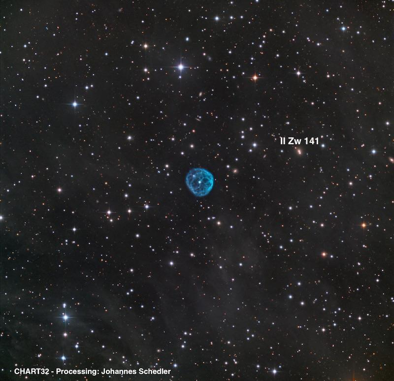
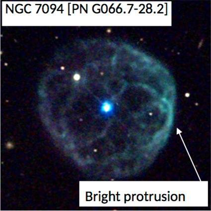

NGC 7094, PN in Pegasus
- Name: NGC 7094 = PK 66-28.1 = PN G066.7-28.2 = K 1-19
- RA: 21h 36m 52.9s
- Dec: +12° 47' 19"
- Type: Planetary Nebula (class IV - ring)
- Size: 99" x 91"
- Distance: ~5900 light years
- Mag: V ≈ 13.7
American comet-hunter and prolific nebula-hunter Lewis Swift discovered NGC 7094 (Swift II-88) on 10 Oct 1884 using his Clark 16-inch refractor in Rochester, New York. He recorded "nebulous star; Bright *; in eeF nebulosity; v difficult; nearly pointed to by 3 st. in a line." He added in a footnote, "This is a prototype of GC 4634 [NGC 7023] and several others, and of No. 7 of my Catalogue No. 1 [NGC 2247], which differs from most nebulous stars by being exactly in the center of circular nebulous atmospheres of uniform brightness." Wolfgang Steinicke mentions that Swift also called this object "the most wonderful of all [nebulous stars] - in fact it is the only instance known to me - for instead of the central star being single, it is double." The second star is line-of-sight on the northeast side.
This beautiful planetary is located just 1.8° NE of M15 and 7' south of 10th magnitude SAO 107277. Images show a complex of interior filaments, an irregular multi-rim structure, and a darker center. On deep images, faint galactic nebulosity (IFN) suffuses the surrounding field in a misty haze and a few distant galaxies are visible. The central star is a relatively bright mag 13.5.

The planetary is visible in an 8-inch scope using a filter and unfiltered in a slightly larger scope. My first observation was 33 years ago in a 13.1-inch f/4.5, which easily showed the central star and a low surface brightness halo unfiltered, but even with a UHC filter there was no structure. Here's my last observation in 2016 through my 24-inch.
Excellent view at 200x using a NPB filter. The 90" disc is fairly crisply defined and contains a bright central star (mag 13.5), even with a filter. Unfiltered, a mag 14.5-15 star is at the NE edge. The planetary is weakly annular and brighter in a 90° arc along the west side. There appears to be a knot or local brightening right at the west edge of the rim.
As a challenge, the compact galaxy II Zw 141 = PGC 67044 lies 6' WNW. It was logged as "faint, very small, round, 12" diameter." On the DSS a mag 15.2 star is at the southwest edge (6" separation from the center of II Zw 141) and probably the galaxy + star were merged visually.
Give it a go and let us know!
Steve's follow-up — August 26th, 2018, 07:56 PM
This close-up image by Adam Block/NOAO/AURA/NSF shows the slightly brighter western side and enhanced point --
